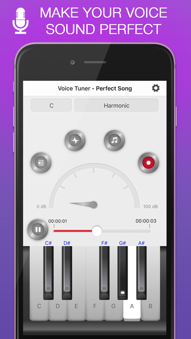
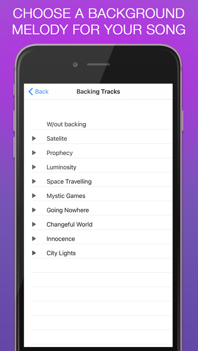
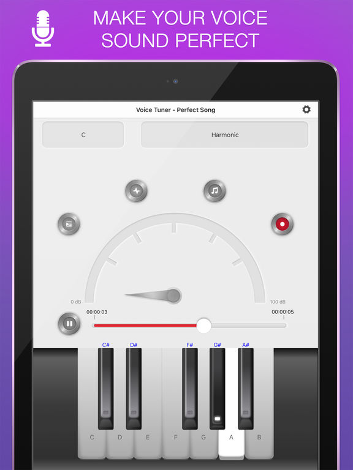
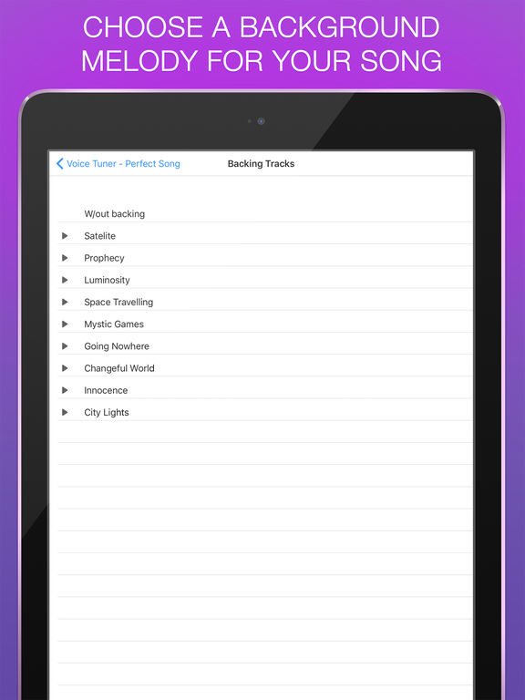
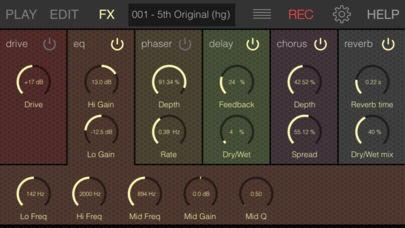
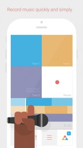

<!DOCTYPE html PUBLIC "-//W3C//DTD XHTML 1.0 Transitional//EN" "http://www.w3.org/TR/xhtml1/DTD/xhtml1-transitional.dtd">
<html xmlns="http://www.w3.org/1999/xhtml" lang="en-US" prefix="og: http://ogp.me/ns#">

 
<!--  --><meta http-equiv="content-type" content="text/html;charset=UTF-8" /><!-- / -->
<head profile="http://gmpg.org/xfn/11">
<meta http-equiv="Content-Type" content="text/html; charset=UTF-8" />
<title>Pro Music Apps  Vocals Archives - Pro Music Apps</title>
<meta name="generator" content="WordPress 4.9.8" /> <!-- leave this for stats -->

<meta name="keywords" content="" />
<link rel="stylesheet" href="../../../wp-content/themes/yestilo/style.css" type="text/css" media="all" />
<link rel="alternate" type="application/rss+xml" title="Pro Music Apps RSS Feed" href="../../../feed/index.html" />
<link rel="pingback" href="../../../xmlrpc.php" />
<script type="text/javascript" src="../../../wp-content/themes/yestilo/js/jquery-1.2.6.min.js"></script>
<script type="text/javascript" src="../../../wp-content/themes/yestilo/js/slider.js"></script>
<link rel="stylesheet" type="text/css" href="../../../wp-content/themes/yestilo/glide.css" media="screen" />	
<link rel="stylesheet" type="text/css" href="../../../wp-content/themes/yestilo/banner.css" media="screen" />	

<script type="text/javascript"><!--//--><![CDATA[//><!--
sfHover = function() {
	if (!document.getElementsByTagName) return false;
	var sfEls = document.getElementById("menu").getElementsByTagName("li");
	var sfEls1 = document.getElementById("catmenu").getElementsByTagName("li");
	for (var i=0; i<sfEls.length; i++) {
		sfEls[i].onmouseover=function() {
			this.className+=" sfhover";
		}
		sfEls[i].onmouseout=function() {
			this.className=this.className.replace(new RegExp(" sfhover\\b"), "");
		}
	}
	for (var i=0; i<sfEls1.length; i++) {
		sfEls1[i].onmouseover=function() {
			this.className+=" sfhover1";
		}
		sfEls1[i].onmouseout=function() {
			this.className=this.className.replace(new RegExp(" sfhover1\\b"), "");
		}
	}
}
if (window.attachEvent) window.attachEvent("onload", sfHover);
//--><!]]></script>

	<link rel='archives' title='July 2018' href='../../../2018/07/index.html' />
	<link rel='archives' title='June 2018' href='../../../2018/06/index.html' />
	<link rel='archives' title='May 2018' href='../../../2018/05/index.html' />
	<link rel='archives' title='April 2018' href='../../../2018/04/index.html' />
	<link rel='archives' title='February 2018' href='../../../2018/02/index.html' />
	<link rel='archives' title='November 2017' href='../../../2017/11/index.html' />
	<link rel='archives' title='October 2017' href='../../../2017/10/index.html' />
	<link rel='archives' title='September 2017' href='../../../2017/09/index.html' />
	<link rel='archives' title='May 2017' href='../../../2017/05/index.html' />
	<link rel='archives' title='March 2017' href='../../../2017/03/index.html' />
	<link rel='archives' title='January 2017' href='../../../2017/01/index.html' />
	<link rel='archives' title='December 2016' href='../../../2016/12/index.html' />
	<link rel='archives' title='November 2016' href='../../../2016/11/index.html' />
	<link rel='archives' title='October 2016' href='../../../2016/10/index.html' />
	<link rel='archives' title='September 2016' href='../../../2016/09/index.html' />
	<link rel='archives' title='August 2016' href='../../../2016/08/index.html' />
	<link rel='archives' title='July 2016' href='../../../2016/07/index.html' />
	<link rel='archives' title='June 2016' href='../../../2016/06/index.html' />
	<link rel='archives' title='May 2016' href='../../../2016/05/index.html' />
	<link rel='archives' title='April 2016' href='../../../2016/04/index.html' />
	<link rel='archives' title='March 2016' href='../../../2016/03/index.html' />
	<link rel='archives' title='February 2016' href='../../../2016/02/index.html' />
	<link rel='archives' title='January 2016' href='../../../2016/01/index.html' />
	<link rel='archives' title='December 2015' href='../../../2015/12/index.html' />
	<link rel='archives' title='November 2015' href='../../../2015/11/index.html' />
	<link rel='archives' title='October 2015' href='../../../2015/10/index.html' />
	<link rel='archives' title='September 2015' href='../../../2015/09/index.html' />
	<link rel='archives' title='August 2015' href='../../../2015/08/index.html' />
	<link rel='archives' title='July 2015' href='../../../2015/07/index.html' />
	<link rel='archives' title='June 2015' href='../../../2015/06/index.html' />
	<link rel='archives' title='May 2015' href='../../../2015/05/index.html' />
	<link rel='archives' title='April 2015' href='../../../2015/04/index.html' />
	<link rel='archives' title='March 2015' href='../../../2015/03/index.html' />
	<link rel='archives' title='February 2015' href='../../../2015/02/index.html' />
	<link rel='archives' title='January 2015' href='../../../2015/01/index.html' />
	<link rel='archives' title='December 2014' href='../../../2014/12/index.html' />
	<link rel='archives' title='November 2014' href='../../../2014/11/index.html' />
	<link rel='archives' title='October 2014' href='../../../2014/10/index.html' />
	<link rel='archives' title='September 2014' href='../../../2014/09/index.html' />
	<link rel='archives' title='August 2014' href='../../../2014/08/index.html' />
	<link rel='archives' title='July 2014' href='../../../2014/07/index.html' />
	<link rel='archives' title='June 2014' href='../../../2014/06/index.html' />
	<link rel='archives' title='May 2014' href='../../../2014/05/index.html' />
	<link rel='archives' title='April 2014' href='../../../2014/04/index.html' />
	<link rel='archives' title='March 2014' href='../../../2014/03/index.html' />
	<link rel='archives' title='February 2014' href='../../../2014/02/index.html' />
	<link rel='archives' title='January 2014' href='../../../2014/01/index.html' />
	<link rel='archives' title='December 2013' href='../../../2013/12/index.html' />
	<link rel='archives' title='November 2013' href='../../../2013/11/index.html' />
	<link rel='archives' title='October 2013' href='../../../2013/10/index.html' />
	<link rel='archives' title='September 2013' href='../../../2013/09/index.html' />
	<link rel='archives' title='August 2013' href='../../../2013/08/index.html' />
	<link rel='archives' title='July 2013' href='../../../2013/07/index.html' />
	<link rel='archives' title='June 2013' href='../../../2013/06/index.html' />
	<link rel='archives' title='May 2013' href='../../../2013/05/index.html' />
	<link rel='archives' title='April 2013' href='../../../2013/04/index.html' />
	<link rel='archives' title='March 2013' href='../../../2013/03/index.html' />
	<link rel='archives' title='February 2013' href='../../../2013/02/index.html' />
	<link rel='archives' title='January 2013' href='../../../2013/01/index.html' />
	<link rel='archives' title='December 2012' href='../../../2012/12/index.html' />
	<link rel='archives' title='November 2012' href='../../../2012/11/index.html' />
	<link rel='archives' title='October 2012' href='../../../2012/10/index.html' />
	<link rel='archives' title='September 2012' href='../../../2012/09/index.html' />
	<link rel='archives' title='August 2012' href='../../../2012/08/index.html' />
	<link rel='archives' title='July 2012' href='../../../2012/07/index.html' />
	<link rel='archives' title='June 2012' href='../../../2012/06/index.html' />
	<link rel='archives' title='May 2012' href='../../../2012/05/index.html' />
	<link rel='archives' title='April 2012' href='../../../2012/04/index.html' />
	<link rel='archives' title='March 2012' href='../../../2012/03/index.html' />
	<link rel='archives' title='February 2012' href='../../../2012/02/index.html' />
	<link rel='archives' title='January 2012' href='../../../2012/01/index.html' />
	<link rel='archives' title='December 2011' href='../../../2011/12/index.html' />
	<link rel='archives' title='November 2011' href='../../../2011/11/index.html' />
	<link rel='archives' title='October 2011' href='../../../2011/10/index.html' />
	<link rel='archives' title='September 2011' href='../../../2011/09/index.html' />
	<link rel='archives' title='August 2011' href='../../../2011/08/index.html' />
	<link rel='archives' title='July 2011' href='../../../2011/07/index.html' />
	<link rel='archives' title='June 2011' href='../../../2011/06/index.html' />
	<link rel='archives' title='May 2011' href='../../../2011/05/index.html' />
	<link rel='archives' title='April 2011' href='../../../2011/04/index.html' />
	<link rel='archives' title='March 2011' href='../../../2011/03/index.html' />
	<link rel='archives' title='February 2011' href='../../../2011/02/index.html' />
	<link rel='archives' title='January 2011' href='../../../2011/01/index.html' />
	<link rel='archives' title='December 2010' href='../../../2010/12/index.html' />
	<link rel='archives' title='November 2010' href='../../../2010/11/index.html' />
	<link rel='archives' title='October 2010' href='../../../2010/10/index.html' />
	<link rel='archives' title='September 2010' href='../../../2010/09/index.html' />
	<link rel='archives' title='August 2010' href='../../../2010/08/index.html' />
	<link rel='archives' title='July 2010' href='../../../2010/07/index.html' />
	<link rel='archives' title='June 2010' href='../../../2010/06/index.html' />
	<link rel='archives' title='May 2010' href='../../../2010/05/index.html' />
	<link rel='archives' title='April 2010' href='../../../2010/04/index.html' />
	<link rel='archives' title='March 2010' href='../../../2010/03/index.html' />
	<link rel='archives' title='February 2010' href='../../../2010/02/index.html' />
	<link rel='archives' title='January 2010' href='../../../2010/01/index.html' />
	<link rel='archives' title='August 2000' href='../../../2000/08/index.html' />

<!-- This site is optimized with the Yoast SEO plugin v5.7.1 - https://yoast.com/wordpress/plugins/seo/ -->
<link rel="canonical" href="index.html" />
<link rel="next" href="page/2/index.html" />
<meta property="og:locale" content="en_US" />
<meta property="og:type" content="object" />
<meta property="og:title" content="Vocals Archives - Pro Music Apps" />
<meta property="og:url" content="https://www.promusicapps.tk/category/music-apps/vocals/" />
<meta property="og:site_name" content="Pro Music Apps" />
<script type='application/ld+json'>{"@context":"http:\/\/schema.org","@type":"WebSite","@id":"#website","url":"https:\/\/www.promusicapps.tk\/","name":"Pro Music Apps","potentialAction":{"@type":"SearchAction","target":"https:\/\/www.promusicapps.tk\/?s={search_term_string}","query-input":"required name=search_term_string"}}</script>
<!-- / Yoast SEO plugin. -->

<link rel='dns-prefetch' href='http://s.w.org/' />
<link rel="alternate" type="application/rss+xml" title="Pro Music Apps &raquo; Vocals Category Feed" href="feed/index.html" />
		<script type="text/javascript">
			window._wpemojiSettings = {"baseUrl":"https:\/\/s.w.org\/images\/core\/emoji\/11\/72x72\/","ext":".png","svgUrl":"https:\/\/s.w.org\/images\/core\/emoji\/11\/svg\/","svgExt":".svg","source":{"concatemoji":"https:\/\/www.promusicapps.tk\/wp-includes\/js\/wp-emoji-release.min.js?ver=4.9.8"}};
			!function(a,b,c){function d(a,b){var c=String.fromCharCode;l.clearRect(0,0,k.width,k.height),l.fillText(c.apply(this,a),0,0);var d=k.toDataURL();l.clearRect(0,0,k.width,k.height),l.fillText(c.apply(this,b),0,0);var e=k.toDataURL();return d===e}function e(a){var b;if(!l||!l.fillText)return!1;switch(l.textBaseline="top",l.font="600 32px Arial",a){case"flag":return!(b=d([55356,56826,55356,56819],[55356,56826,8203,55356,56819]))&&(b=d([55356,57332,56128,56423,56128,56418,56128,56421,56128,56430,56128,56423,56128,56447],[55356,57332,8203,56128,56423,8203,56128,56418,8203,56128,56421,8203,56128,56430,8203,56128,56423,8203,56128,56447]),!b);case"emoji":return b=d([55358,56760,9792,65039],[55358,56760,8203,9792,65039]),!b}return!1}function f(a){var c=b.createElement("script");c.src=a,c.defer=c.type="text/javascript",b.getElementsByTagName("head")[0].appendChild(c)}var g,h,i,j,k=b.createElement("canvas"),l=k.getContext&&k.getContext("2d");for(j=Array("flag","emoji"),c.supports={everything:!0,everythingExceptFlag:!0},i=0;i<j.length;i++)c.supports[j[i]]=e(j[i]),c.supports.everything=c.supports.everything&&c.supports[j[i]],"flag"!==j[i]&&(c.supports.everythingExceptFlag=c.supports.everythingExceptFlag&&c.supports[j[i]]);c.supports.everythingExceptFlag=c.supports.everythingExceptFlag&&!c.supports.flag,c.DOMReady=!1,c.readyCallback=function(){c.DOMReady=!0},c.supports.everything||(h=function(){c.readyCallback()},b.addEventListener?(b.addEventListener("DOMContentLoaded",h,!1),a.addEventListener("load",h,!1)):(a.attachEvent("onload",h),b.attachEvent("onreadystatechange",function(){"complete"===b.readyState&&c.readyCallback()})),g=c.source||{},g.concatemoji?f(g.concatemoji):g.wpemoji&&g.twemoji&&(f(g.twemoji),f(g.wpemoji)))}(window,document,window._wpemojiSettings);
		</script>
		<style type="text/css">
img.wp-smiley,
img.emoji {
	display: inline !important;
	border: none !important;
	box-shadow: none !important;
	height: 1em !important;
	width: 1em !important;
	margin: 0 .07em !important;
	vertical-align: -0.1em !important;
	background: none !important;
	padding: 0 !important;
}
</style>
<link rel='stylesheet' id='dashicons-css'  href='../../../wp-includes/css/dashicons.min5010.css?ver=4.9.8' type='text/css' media='all' />
<link rel='stylesheet' id='thickbox-css'  href='../../../wp-includes/js/thickbox/thickbox5010.css?ver=4.9.8' type='text/css' media='all' />
<link rel='stylesheet' id='mobiloud-iphone-css'  href='../../../wp-content/plugins/mobiloud-mobile-app-plugin/css/iphone5010.css?ver=4.9.8' type='text/css' media='all' />
<link rel='stylesheet' id='wp-pagenavi-css'  href='../../../wp-content/plugins/wp-pagenavi/pagenavi-css44fd.css?ver=2.70' type='text/css' media='all' />
<script type='text/javascript' src='../../../wp-includes/js/jquery/jqueryb8ff.js?ver=1.12.4'></script>
<script type='text/javascript' src='../../../wp-includes/js/jquery/jquery-migrate.min330a.js?ver=1.4.1'></script>
<script type='text/javascript' src='../../../wp-content/plugins/google-analyticator/external-tracking.min380f.js?ver=6.5.4'></script>
<link rel='https://api.w.org/' href='../../../wp-json/index.html' />
<link rel="EditURI" type="application/rsd+xml" title="RSD" href="../../../xmlrpc0db0.php?rsd" />
<link rel="wlwmanifest" type="application/wlwmanifest+xml" href="../../../wp-includes/wlwmanifest.xml" /> 
<meta name="generator" content="WordPress 4.9.8" />

<!-- This site is using AdRotate v4.10 to display their advertisements - https://ajdg.solutions/products/adrotate-for-wordpress/ -->
<link href="../../../wp-content/plugins/appstore/css/AppStore.css" rel="stylesheet" type="text/css"/><style type='text/css'>.appImageContainer {width: auto;margin: 0px;}</style><style data-context="foundation-flickity-css">/*! Flickity v2.0.2
http://flickity.metafizzy.co
---------------------------------------------- */.flickity-enabled{position:relative}.flickity-enabled:focus{outline:0}.flickity-viewport{overflow:hidden;position:relative;height:100%}.flickity-slider{position:absolute;width:100%;height:100%}.flickity-enabled.is-draggable{-webkit-tap-highlight-color:transparent;tap-highlight-color:transparent;-webkit-user-select:none;-moz-user-select:none;-ms-user-select:none;user-select:none}.flickity-enabled.is-draggable .flickity-viewport{cursor:move;cursor:-webkit-grab;cursor:grab}.flickity-enabled.is-draggable .flickity-viewport.is-pointer-down{cursor:-webkit-grabbing;cursor:grabbing}.flickity-prev-next-button{position:absolute;top:50%;width:44px;height:44px;border:none;border-radius:50%;background:#fff;background:hsla(0,0%,100%,.75);cursor:pointer;-webkit-transform:translateY(-50%);transform:translateY(-50%)}.flickity-prev-next-button:hover{background:#fff}.flickity-prev-next-button:focus{outline:0;box-shadow:0 0 0 5px #09F}.flickity-prev-next-button:active{opacity:.6}.flickity-prev-next-button.previous{left:10px}.flickity-prev-next-button.next{right:10px}.flickity-rtl .flickity-prev-next-button.previous{left:auto;right:10px}.flickity-rtl .flickity-prev-next-button.next{right:auto;left:10px}.flickity-prev-next-button:disabled{opacity:.3;cursor:auto}.flickity-prev-next-button svg{position:absolute;left:20%;top:20%;width:60%;height:60%}.flickity-prev-next-button .arrow{fill:#333}.flickity-page-dots{position:absolute;width:100%;bottom:-25px;padding:0;margin:0;list-style:none;text-align:center;line-height:1}.flickity-rtl .flickity-page-dots{direction:rtl}.flickity-page-dots .dot{display:inline-block;width:10px;height:10px;margin:0 8px;background:#333;border-radius:50%;opacity:.25;cursor:pointer}.flickity-page-dots .dot.is-selected{opacity:1}</style><style data-context="foundation-slideout-css">.slideout-menu{position:fixed;left:0;top:0;bottom:0;right:auto;z-index:0;width:256px;overflow-y:auto;-webkit-overflow-scrolling:touch;display:none}.slideout-menu.pushit-right{left:auto;right:0}.slideout-panel{position:relative;z-index:1;will-change:transform}.slideout-open,.slideout-open .slideout-panel,.slideout-open body{overflow:hidden}.slideout-open .slideout-menu{display:block}.pushit{display:none}</style>		<style type="text/css">
		.better-tag-cloud-shortcode li,
		.better-tag-cloud-shortcode li a,
		li#better-tag-cloud ul.wp-tag-cloud li,
		li#better-tag-cloud ul.wp-tag-cloud li a {
			display:	inline;
					}
		</style> <!-- Google Analytics Tracking by Google Analyticator 6.5.4: http://www.videousermanuals.com/google-analyticator/ -->
<script type="text/javascript">
    var analyticsFileTypes = [''];
    var analyticsSnippet = 'enabled';
    var analyticsEventTracking = 'enabled';
</script>
<script type="text/javascript">
	var _gaq = _gaq || [];
  
	_gaq.push(['_setAccount', 'UA-124581973-2']);
    _gaq.push(['_addDevId', 'i9k95']); // Google Analyticator App ID with Google
	_gaq.push(['_trackPageview']);

	(function() {
		var ga = document.createElement('script'); ga.type = 'text/javascript'; ga.async = true;
		                ga.src = ('https:' == document.location.protocol ? 'https://ssl' : 'http://www') + '.google-analytics.com/ga.js';
		                var s = document.getElementsByTagName('script')[0]; s.parentNode.insertBefore(ga, s);
	})();
</script>
<style>.ios7.web-app-mode.has-fixed header{ background-color: rgba(3,122,221,.88);}</style>
<script type="text/javascript">

  var _gaq = _gaq || [];
  _gaq.push(['_setAccount', 'UA-124581973-2']);
  _gaq.push(['_trackPageview']);

  (function() {
    var ga = document.createElement('script'); ga.type = 'text/javascript'; ga.async = true;
    ga.src = ('https:' == document.location.protocol ? 'https://ssl' : 'http://www') + '.google-analytics.com/ga.js';
    var s = document.getElementsByTagName('script')[0]; s.parentNode.insertBefore(ga, s);
  })();

</script>

<!-- Quantcast Tag -->
<script type="text/javascript">
var _qevents = _qevents || [];

(function() {
var elem = document.createElement('script');
elem.src = (document.location.protocol == "https:" ? "https://secure" : "http://edge") + ".quantserve.com/quant.js";
elem.async = true;
elem.type = "text/javascript";
var scpt = document.getElementsByTagName('script')[0];
scpt.parentNode.insertBefore(elem, scpt);
})();

_qevents.push({
qacct:"p-4bNPIxg_z12V2"
});
</script>

<noscript>
<div style="display:none;">

</div>
</noscript>
<!-- End Quantcast tag -->

</head>

<body>

<div id="wrapper">


<div id="top"> 
<!-- Error, Ad is not available at this time due to schedule/geolocation restrictions! --><div class="blogname">
	<h1><a href="../../../index.html" title="Pro Music Apps">Pro Music Apps</a></h1>
	
<h2></h2></h1>

</div>

</div>

<div id="foxmenucontainer">
	<div id="menu">
		<ul>
			<li><a href="../../../index.html">Home</a></li>
			<li class="page_item page-item-2"><a href="../../../about/index.html">About</a></li>

<li class="page_item page-item-171"><a href="../../../advertising/index.html">Advertising</a></li>

<
		
		</ul>
	</div>		
</div>
<div class="clear"></div>
<div id="catmenucontainer">
	<div id="catmenu">
			<ul>
					<li class="cat-item cat-item-3"><a href="../../featured/index.html" >Featured</a>
</li>
	<li class="cat-item cat-item-26"><a href="../../hardware/index.html" >Hardware</a>
</li>
	<li class="cat-item cat-item-174"><a href="../../interviews/index.html" >Interviews</a>
</li>
	<li class="cat-item cat-item-85"><a href="../../ipad/index.html" >iPad</a>
</li>
	<li class="cat-item cat-item-5 current-cat-parent current-cat-ancestor"><a href="../index.html" >Music Apps</a>
<ul class='children'>
	<li class="cat-item cat-item-50"><a href="../audio-processing/index.html" >Audio Processing</a>
</li>
	<li class="cat-item cat-item-137"><a href="../controllers/index.html" >Controllers</a>
</li>
	<li class="cat-item cat-item-173"><a href="../djing/index.html" >DJing</a>
</li>
	<li class="cat-item cat-item-7"><a href="../drums/index.html" >Drums</a>
</li>
	<li class="cat-item cat-item-8"><a href="../guitars/index.html" >Guitars</a>
</li>
	<li class="cat-item cat-item-35"><a href="../loops-music-apps/index.html" >Loops</a>
</li>
	<li class="cat-item cat-item-89"><a href="../midi-music-apps/index.html" >MIDI</a>
</li>
	<li class="cat-item cat-item-70"><a href="../mixing/index.html" >Mixing</a>
</li>
	<li class="cat-item cat-item-9"><a href="../recording/index.html" >Recording</a>
</li>
	<li class="cat-item cat-item-72"><a href="../sampler-music-apps/index.html" >Sampler</a>
</li>
	<li class="cat-item cat-item-37"><a href="../sequencers/index.html" >Sequencers</a>
</li>
	<li class="cat-item cat-item-6"><a href="../synths/index.html" >Synths</a>
</li>
	<li class="cat-item cat-item-49 current-cat"><a href="index.html" >Vocals</a>
</li>
</ul>
</li>
	<li class="cat-item cat-item-4"><a href="../../news/index.html" >News</a>
</li>
	<li class="cat-item cat-item-167"><a href="../../reviews/index.html" >Reviews</a>
</li>
	<li class="cat-item cat-item-11"><a href="../../videos/index.html" >Videos</a>
</li>
			</ul>
	</div>		
</div>
<div class="clear"></div>
<div id="casing">		
<div id="content">


		<div class="single" id="post-8906">
<div class="title">

<h2><a href="../../../voice-tuner-plus/index.html" rel="bookmark" title="Permanent Link to Voice Tuner Plus">Voice Tuner Plus</a></h2>
<div class="date"><span class="author">Posted by Mikers</span> <span class="clock"> On September - 8 - 2016</span> <span class="comm"> <a href="../../../voice-tuner-plus/index.html#respond">ADD COMMENTS</a></span></div>	
</div>

<div class="cover">
<div class="entry">

					<blockquote><p>Voice Tuner &#8211; Perfect Song is a vocoder and a recording studio in one app.<br />
Voice coding by various scales, multiple backing tracks, and sound effects are waiting for you!</p>
<p>Voice Tuner – Perfect Song FEATURES:</p>
<p>VOICE CODING BY SCALE<br />
&#8211; Pick a note and a scale and record your voice<br />
&#8211; Your singing gets recoded according to the scale of your choice</p>
<p>VARIOUS BACKING TRACKS<br />
Record your voice with several background beats<br />
Pick a background beat for your record</p>
<p>EQUALIZER &amp; EFFECTS<br />
Adjust your record with various sound controls</p>
<p>PIANO KEYBOARD<br />
&#8211; Scales and notes highlighted on the keyboard<br />
&#8211; Add piano melody or accompaniment to your song</p></blockquote>
<div class="appBundle"><span class="apps"><span style="display: block; width: 246px; height: 97px; position: absolute; margin-top: -15px; margin-left: 70px; z-index: 25; background: transparent url(../../../wp-content/plugins/appstore/images/notInAs.png) center center no-repeat;"></span><a class="Bild" href="http://clk.tradedoubler.com/click?p=24380&amp;a=1678350&amp;url=https%3A%2F%2Fitunes.apple.com%2Fus%2Fapp%2Fvoice-tuner-plus-perfect-song%2Fid1146384259%3Fmt%3D8%26uo%3D4%26partnerId%3D2003" target="_blank"></a> <span class="Titel">Voice Tuner Plus - Perfect Song</span><br /> <span class="Hersteller">Developer: </span> <a href="#" target="_blank">Music Breath, OOO</a><br /> <div><span class="Freigabe">Rated: </span>4+</div> <span class="Preis">Price: </span>$29.99 <span class="Download"><a href="http://clk.tradedoubler.com/click?p=24380&amp;a=1678350&amp;url=https%3A%2F%2Fitunes.apple.com%2Fus%2Fapp%2Fvoice-tuner-plus-perfect-song%2Fid1146384259%3Fmt%3D8%26uo%3D4%26partnerId%3D2003" rel="nofollow" target="_blank" >Download Here</a></span></span><div style="clear: both"></div><div class='appImageContainer'><div class='appSliderGallery'><ul> <li><a href="../../../a5.mzstatic.com/us/r30/Purple62/v4/7b/1e/11/7b1e1105-7964-7865-d7e3-e16ceba99dbc/screen696x696.jpg"></a></li><li><a href="../../../a1.mzstatic.com/us/r30/Purple22/v4/70/15/aa/7015aa5e-d849-5ef6-43f8-88fcd7ddec88/screen696x696.jpg"></a></li><li><a href="../../../a3.mzstatic.com/us/r30/Purple22/v4/6f/66/b2/6f66b2f7-7ced-ed21-eed3-2c68140316cc/screen696x696.jpg"></a></li><li><a href="../../../a4.mzstatic.com/us/r30/Purple62/v4/17/e9/f0/17e9f032-6e29-83b2-9ff5-44a608522659/sc1024x768.jpg"></a></li><li><a href="../../../a3.mzstatic.com/us/r30/Purple62/v4/95/8a/b9/958ab9cb-fd0b-68a8-c546-7d7741073d71/sc1024x768.jpg"></a></li><li><a href="../../../a3.mzstatic.com/us/r30/Purple71/v4/a7/3a/1a/a73a1ab7-6c02-3deb-666f-0b95023d7332/sc1024x768.jpg"></a></li></ul></div></div> </div>
				<div class="clear"></div>
</div>

</div>

<div class="singleinfo">
					<div class="category"><a href="../audio-processing/index.html" rel="category tag">Audio Processing</a> <a href="index.html" rel="category tag">Vocals</a> </div>
				
</div>


</div>
		<div class="single" id="post-8827">
<div class="title">

<h2><a href="../../../voxsyn/index.html" rel="bookmark" title="Permanent Link to VoxSyn">VoxSyn</a></h2>
<div class="date"><span class="author">Posted by Mikers</span> <span class="clock"> On July - 10 - 2016</span> <span class="comm"> <a href="../../../voxsyn/index.html#respond">ADD COMMENTS</a></span></div>	
</div>

<div class="cover">
<div class="entry">

					<blockquote><p>VoxSyn turns your voice into the most flexible vocal sound generator ever. Instantly following even subtle modulations of pitch and spectral changes of your voice VoxSyn creates signature vocal sounds far beyond traditional vocoding.</p>
<p>Talk or sing into the microphone and you’ll trigger various synthesizer sounds following your voice pitch or the notes touched on the hexagonal keyboard / external MIDI Keyboard. The basic sounds are selected from a vast pool of predefined sounds from the famous TERA synthesis engine which can be further expanded by its unique random sound generator.</p>
<p>The harmonic table note layout visualizes your voices pitch in realtime and also let you play notes for more traditional vocoder effects.</p>
<p>VoxSyn is Audiobus compatible and can be used in the Input, Filter and Output slots in the Audiobus signal chain.</p>
<p>The output can be recorded to an audio file which you<br />
can use with other Apps and programs for further processing.</p>
<p>Features:</p>
<p>&#8211; Voice control of pitch and timbre<br />
&#8211; 22-channel Vocoder<br />
&#8211; Integrated preset synthesizer engine<br />
&#8211; Hundreds of presets included<br />
&#8211; Hi-end Reverb and Chorus/Delay/Distortion/Phaser effects<br />
&#8211; Share/Export of audio recordings<br />
&#8211; CoreMIDI / Virtual MIDI and Background audio<br />
&#8211; Inter App Audio compatible<br />
&#8211; Audiobus 2 support (Input/Filter/Output) with state saving</p>
<p style="text-align: center;"><iframe class='youtube-player youtuber' type='text/html' width='425' height='355' src='http://www.youtube.com/embed/bnS5ciIOdOU?rel=0&amp;fs=1' webkitAllowFullScreen mozallowfullscreen allowFullScreen frameborder='0'></iframe></p>
</blockquote>
<p style="text-align: left;"><div class="appBundle"><span class="apps"><a class="Bild" href="http://clk.tradedoubler.com/click?p=24380&amp;a=1678350&amp;url=https%3A%2F%2Fitunes.apple.com%2Fus%2Fapp%2Fvoxsyn%2Fid1098787951%3Fmt%3D8%26uo%3D4%26partnerId%3D2003" target="_blank"></a> <span class="Titel">VoxSyn</span><br /> <span class="Hersteller">Developer: </span> <a href="http://www.virsyn.net/mobileapp" target="_blank">VirSyn Software Synthesizer</a><br /> <div><span class="Freigabe">Rated: </span>4+</div> <span class="Preis">Price: </span>$9.99 <span class="Download"><a href="http://clk.tradedoubler.com/click?p=24380&amp;a=1678350&amp;url=https%3A%2F%2Fitunes.apple.com%2Fus%2Fapp%2Fvoxsyn%2Fid1098787951%3Fmt%3D8%26uo%3D4%26partnerId%3D2003" rel="nofollow" target="_blank" >Download Here</a></span></span><div style="clear: both"></div><div class='appImageContainer'><div class='appSliderGallery'><ul> <li><a href="../../../is2-ssl.mzstatic.com/image/thumb/Purple71/v4/72/7a/19/727a1944-26b9-fcab-c769-b01dd80ea2f7/source/406x228bb.jpg"></a></li><li><a href="../../../is2-ssl.mzstatic.com/image/thumb/Purple71/v4/29/13/61/291361d8-d223-b72f-1267-fc0d5ab87204/source/406x228bb.jpg"></a></li><li><a href="../../../is5-ssl.mzstatic.com/image/thumb/Purple71/v4/c0/a5/e4/c0a5e4e1-196b-d162-8da9-6e1551dfa81a/source/406x228bb.jpg"></a></li><li><a href="../../../is5-ssl.mzstatic.com/image/thumb/Purple71/v4/8e/d7/89/8ed789f0-f306-d9a4-da0b-c9f21b660c77/source/552x414bb.jpg"></a></li><li><a href="../../../is3-ssl.mzstatic.com/image/thumb/Purple71/v4/03/1b/c4/031bc42d-0824-5505-4730-d78193b55aaf/source/552x414bb.jpg"></a></li><li><a href="../../../is2-ssl.mzstatic.com/image/thumb/Purple71/v4/90/4b/cc/904bcccb-2b8d-4af6-b836-7c97905f8717/source/552x414bb.jpg"></a></li></ul></div></div> </div></p>
				<div class="clear"></div>
</div>

</div>

<div class="singleinfo">
					<div class="category"><a href="../audio-processing/index.html" rel="category tag">Audio Processing</a> <a href="index.html" rel="category tag">Vocals</a> </div>
				
</div>


</div>
		<div class="single" id="post-8513">
<div class="title">

<h2><a href="../../../singpro-for-iphone/index.html" rel="bookmark" title="Permanent Link to SingPro for iPhone">SingPro for iPhone</a></h2>
<div class="date"><span class="author">Posted by Mikers</span> <span class="clock"> On January - 2 - 2016</span> <span class="comm"> <a href="../../../singpro-for-iphone/index.html#comments">3 COMMENTS</a></span></div>	
</div>

<div class="cover">
<div class="entry">

					<p>I don&#8217;t know about you, but this seems a bit steep for a vocal training app!&#8230; Still, if it gets you results you can&#8217;t argue with that&#8230;..</p>
<blockquote><p><a href="../../../wp-content/uploads/2016/01/pitch_training.jpg"></a>SingPro is the first and only fully mobile vocal training program that works right off your phone, tablet, laptop, and desktop computer. It is easy to use and will helps singers strengthen their voice, create more power and range, and have more freedom and enjoyment in their singing.</p>
<p>The vocal technique in SingPro is the same technique used by the music industries biggest artists and the research behind the vocal evaluations are cutting edge.</p>
<p>Some of the features include:<br />
-Spectrogram Analysis Driven Vocal Workouts<br />
-Pitch Training Program<br />
-Karaoke &amp; Key Change Exporter<br />
-“How To” Video Library<br />
-Interactive Vocal Journal to Track Progress<br />
-Artist Development E-Library<br />
-Access to Top Industry Vocal Experts<br />
-Proven Vocal Technique used by Celebrities &amp; Vocal Experts<br />
-Much More…</p>
<p>SingPro is the most in-demand vocal educational program and is used as the base curriculum in schools across the world.</p>
<p>More info &#8211; <a href="http://singpro.com/" target="_blank">http://singpro.com/</a></p>
<p style="text-align: center;"><iframe class='youtube-player youtuber' type='text/html' width='425' height='355' src='http://player.vimeo.com/video/107972668?title=0&amp;byline=0&amp;portrait=0' frameborder='0'></iframe></p>
</blockquote>
<p style="text-align: left;"><div class="appBundle"><span class="apps"><a class="Bild" href="http://clk.tradedoubler.com/click?p=24380&amp;a=1678350&amp;url=https%3A%2F%2Fitunes.apple.com%2Fus%2Fapp%2Fsingpro-for-iphone%2Fid1062010255%3Fmt%3D8%26uo%3D4%26partnerId%3D2003" target="_blank"></a> <span class="Titel">SingPro for iPhone</span><br /> <span class="Hersteller">Developer: </span> <a href="http://www.singpro.com/" target="_blank">DS Vocology, LLC</a><br /> <div><span class="Freigabe">Rated: </span>4+</div> <span class="Preis">Price: </span>$149.99 <span class="Download"><a href="https://itunes.apple.com/us/app/singpro-for-iphone/id1062010255?mt=8&amp;uo=4&amp;at=1001lNL9" rel="nofollow" target="_blank" >Download Here</a></span></span><div style="clear: both"></div><div class='appImageContainer'><div class='appSliderGallery'><ul> <li><a href="../../../is1-ssl.mzstatic.com/image/thumb/Purple62/v4/1f/de/47/1fde47ab-6d8a-e0f4-8c5c-7e2bae2481d6/source/392x696bb.jpg"></a></li><li><a href="../../../is4-ssl.mzstatic.com/image/thumb/Purple71/v4/80/af/e1/80afe1da-454f-07e4-46a4-f2150755b2ce/source/392x696bb.jpg"></a></li><li><a href="../../../is5-ssl.mzstatic.com/image/thumb/Purple62/v4/0c/d0/e2/0cd0e294-e151-3b6f-dbd0-3d22dfa38495/source/392x696bb.jpg"></a></li></ul></div></div> </div></p>
				<div class="clear"></div>
</div>

</div>

<div class="singleinfo">
					<div class="category"><a href="index.html" rel="category tag">Vocals</a> </div>
				
</div>


</div>
		<div class="single" id="post-8497">
<div class="title">

<h2><a href="../../../dj-voxchanger/index.html" rel="bookmark" title="Permanent Link to DJ Voxchanger">DJ Voxchanger</a></h2>
<div class="date"><span class="author">Posted by Mikers</span> <span class="clock"> On December - 9 - 2015</span> <span class="comm"> <a href="../../../dj-voxchanger/index.html#respond">ADD COMMENTS</a></span></div>	
</div>

<div class="cover">
<div class="entry">

					<p><a href="../../../wp-content/uploads/2015/12/screen480x480-12.jpg"></a>I don&#8217;t know how  much &#8216;professional&#8217; use this app will be good for, but it&#8217;s free so no harm it trying it out.</p>
<blockquote><p>The first app in the world that can separate and transform vocals within any song on your device!</p>
<p>Be amazed as your favorite singers become robots, aliens, monsters, older, younger or the opposite gender, all without affecting their backing tracks! Have fun with your friends! Remix, record and share your transformations as audio or video files, or add them straight to your next live set. The integrated ADX separation technology provides results that are impossible to produce with any other software on the market.</p>
<p>Highlights:</p>
<p>&#8211; Separate and transform any vocal, in any song (mono or stereo)<br />
&#8211; Modify vocals without affecting the rest of the music<br />
&#8211; Use matrix buttons to quickly alter the age or gender of any vocalist<br />
&#8211; Use faders to freely adjust vocal pitch and timbre and to control vibrato depth and frequency<br />
&#8211; Use transformation presets including Alien, Robot, Monster, Tuner, and Harmony<br />
&#8211; Memorize, store and recall vocal transformations<br />
&#8211; Export final results and share audio and video directly by email, SoundCloud, YouTube, Vimeo, Dropbox, Facebook, Twitter, Tumblr or other installed apps</p></blockquote>
[appext 1033153495]
				<div class="clear"></div>
</div>

</div>

<div class="singleinfo">
					<div class="category"><a href="../audio-processing/index.html" rel="category tag">Audio Processing</a> <a href="index.html" rel="category tag">Vocals</a> </div>
				
</div>


</div>
		<div class="single" id="post-8406">
<div class="title">

<h2><a href="../../../ferrite-recording-studio/index.html" rel="bookmark" title="Permanent Link to Ferrite Recording Studio">Ferrite Recording Studio</a></h2>
<div class="date"><span class="author">Posted by Mikers</span> <span class="clock"> On November - 5 - 2015</span> <span class="comm"> <a href="../../../ferrite-recording-studio/index.html#respond">ADD COMMENTS</a></span></div>	
</div>

<div class="cover">
<div class="entry">

					<blockquote><p><a href="../../../wp-content/uploads/2015/11/screen480x480.jpg"></a>Ferrite combines the ease-of-use of a “voice memo” audio recorder, with a versatile multi-track editing studio — and powerful additional tools like effects &amp; automation available when you need them.</p>
<p>With time-saving features and a UI designed to get out of your way, this is the app you need for podcasting, radio journalism, or other professional voice production like lectures, speeches, and voiceovers.</p>
<p>— Streamlined Recording —</p>
<p>Open Ferrite and with just one tap you’re recording. No fuss, and it won&#8217;t break a sweat even with hours-long sessions. Just make sure your device has enough free space!</p>
<p>Recording an interview and you want to highlight a few quotes? Have to take out some inappropriate language? Or just fluffed a sentence and need to fix it? Bookmark moments during your recording and they’ll be flagged up during edits, so you can jump right to them.</p>
<p>Monitor levels with live recording meters, or listen through headphones. Tag your audio to find it quickly later. And of course you can import audio from your Music Library, iCloud, and other services such as Dropbox.</p>
<p>Please note: the free version has limited duration for recording &amp; editing projects. Upgrade, and you can edit projects up to 24 hours long!</p>
<p>— Editing is a Snip —</p>
<p>Ferrite features full multi-track editing, from quick cuts, up to producing a complete podcast or broadcast package. Zoom out to see hours at a glance, or zoom in all the way down to individual samples.</p>
<p>Take a single clip, or a bunch, and arrange them in an editing project: moving, cropping, slicing, fading in and out, or crossfade between clips just by overlapping them. Arrange your clips on tracks, with full control over each track’s volume and panning, and Mute or Solo as needed.</p>
<p>And best of all, you needn’t fear trying out changes: Ferrite has great Undo/Redo — even if you quit the app and come back a month later, you can still undo all the way back to the moment you created your project!</p>
<p>— Advanced Editing Features —</p>
<p>Need more? Ferrite also includes:</p>
<p>• Automatic ducking: set tracks to “duck under” others (e.g. ducking music behind voice-overs)<br />
• Strip Silence: Carves away all the silent sections from a recording, making it easy to edit the remaining audio</p>
<p>With a single In-App Purchase, you can unlock these additional tools:</p>
<p>• Add professional effects to your tracks such as Noise Gate and Dynamic Range Compression, for projects that sound clean and engaging<br />
• Automate volume, panning and effects settings so they vary over time, both on individual tracks and the final mix<br />
• Adjust automated settings during playback to record your changes into the timeline<br />
• If you need the most precise control, you can create or fine-tune automation curves directly</p>
<p>— Bonus Features in iOS 9 —</p>
<p>• Find your recordings and projects direct from your Home Screen, with Spotlight support<br />
• iPad Split View and Slide Over support: Use Ferrite side-by-side with other apps. Recording a narration? Open another app with your script and place Ferrite down the side of the screen. Or open the User Guide in Safari on one side while you learn Ferrite on the other.</p>
<p>Bonus features available on compatible devices only. Please see our support pages for more details. Maximum number of tracks available depends on the speed of your device.</p>
<p><strong>Fore more details &#8211; <a href="http://www.wooji-juice.com/products/ferrite/index" target="_blank">http://www.wooji-juice.com/products/ferrite/index</a></strong></p>
<p style="text-align: center;"><iframe class='youtube-player youtuber' type='text/html' width='425' height='355' src='http://www.youtube.com/embed/udHEbHMjOiU?rel=0&amp;fs=1' webkitAllowFullScreen mozallowfullscreen allowFullScreen frameborder='0'></iframe></p>
</blockquote>
<p style="text-align: left;">[appext 1018780185]</p>
				<div class="clear"></div>
</div>

</div>

<div class="singleinfo">
					<div class="category"><a href="../recording/index.html" rel="category tag">Recording</a> <a href="index.html" rel="category tag">Vocals</a> </div>
				
</div>


</div>
		<div class="single" id="post-8367">
<div class="title">

<h2><a href="../../../colla-voce/index.html" rel="bookmark" title="Permanent Link to Colla Voce">Colla Voce</a></h2>
<div class="date"><span class="author">Posted by Mikers</span> <span class="clock"> On October - 8 - 2015</span> <span class="comm"> <a href="../../../colla-voce/index.html#respond">ADD COMMENTS</a></span></div>	
</div>

<div class="cover">
<div class="entry">

					<blockquote><p><a href="../../../wp-content/uploads/2015/10/screen480x480-1.jpg"></a>Colla Voce is the ideal practice companion for singers of all kinds, from beginners to professionals. (If you are looking to use Colla Voce for whistling or instrumental music, please see the note at the bottom.) See our website at http://www.collavoceapp.com for a demo video, UI Tour, FAQ and articles.</p>
<p>The app is built around two beautifully simple ideas:</p>
<p>1. A playable piano with keys that light up as you sing. If you sing a note in tune, the corresponding key is immediately highlighted in yellow. Sharp and flat notes are coloured green and red, respectively.</p>
<p>2. A recording tool that allows you to capture and play back your own voice, in an interactive, fluid way that is designed around the way you rehearse.</p>
<p>Together, these two ideas produce something that is greater than the sum of its parts. Colla Voce’s exceptionally accurate and responsive pitch detection provides real-time visual feedback on both coarse- and fine-grained singing pitch. However, the ultimate judge of musicality is the human ear, not any computer program! Instant, note-by-note replay lets you go back and hear how you sound “from the outside”. Colla Voce can even automatically play the corresponding piano notes along with the audio replay.</p>
<p>The psychology of singing pitch is subtle and complex. The gap between what you hear and what others hear as you sing can be surprisingly wide. Colla Voce bridges that gap. You could think of it as a mirror for your voice.</p>
<p>Designed with the elegant aesthetics of a real musical instrument, Colla Voce is so intuitive that anybody can pick it up and use it immediately. At the same time, it is sophisticated enough to support musicians at every stage of their musical journey. Beginners taking their first steps, learning to reliably sing back a note; students practising for aural examinations, learning intervals and sight-singing; vocal coaches looking to give their pupils a new perspective on their voices; amateur and professional singers of all kinds polishing their performances; Colla Voce offers something for everyone.</p>
<p>&#8212;&#8212;&#8212;&#8212;&#8212;&#8212;&#8212;&#8212;&#8212;-</p>
<p>Features:</p>
<p>* A playable, 3D piano keyboard with an optional overlay showing the note name for each key.<br />
* As you sing, the corresponding piano keys are highlighted: yellow for in tune, green for sharp, red for flat.<br />
* An innovative, proprietary algorithm, specifically tailored for singing voices, gives accurate and fast pitch detection.<br />
* Sophisticated note tracking logic prevents highlighting of extraneous notes, e.g. intermediate pitches as the voice moves from one note to another.<br />
* Tuning information displayed on the piano keyboard is clear and stable, even in the presence of wide vibrato (where the instantaneous pitch can range over multiple notes).<br />
* Instantaneous pitch is displayed in a graph, so that vibrato/waver contour is visible.<br />
* The graph also acts as an “index” for the replay functionality, allowing the user to identify sung notes by their musical note names.<br />
* One-touch replay of the last 5 seconds, 10 seconds or 20 seconds of recorded sound. Alternatively, stop recording and drag on the fine pitch graph to scroll and select a range from 60 seconds of history (two-finger drag to scroll, single-finger drag to select).<br />
* &#8220;Replay auto-accompany&#8221; causes the piano to automatically play the corresponding piano notes during playback.<br />
* &#8220;Note Lock&#8221; allows you to disable keys corresponding to notes that will not be sung, allowing the note tracker and auto-accompany to avoid those notes.</p></blockquote>
[appext 1035254849]
				<div class="clear"></div>
</div>

</div>

<div class="singleinfo">
					<div class="category"><a href="../synths/index.html" rel="category tag">Synths</a> <a href="index.html" rel="category tag">Vocals</a> </div>
				
</div>


</div>
		<div class="single" id="post-8340">
<div class="title">

<h2><a href="../../../emo-chorus/index.html" rel="bookmark" title="Permanent Link to Emo Chorus">Emo Chorus</a></h2>
<div class="date"><span class="author">Posted by Mikers</span> <span class="clock"> On August - 28 - 2015</span> <span class="comm"> <a href="../../../emo-chorus/index.html#respond">ADD COMMENTS</a></span></div>	
</div>

<div class="cover">
<div class="entry">

					<blockquote><p><a href="../../../wp-content/uploads/2015/08/screen480x480-11.jpg"></a>Realistic Choir simulator ranging from simple Chorus emulation to full ensemble Choir with 128 members.</p>
<p>Emo Chorus is a modulation effect used used to create a richer, thicker sound and add subtle movement. The effect roughly simulates the slight variations in pitch and timing that occur when multiple performers sing or play the same part.In contrast to most traditional chorus effect units Emo Chorus allows for astonishingly realistic big choirs with up to 128 voices !</p>
<p>Use live input from any source &#8211; Microphone, Guitar, Audiobus and Inter App Audio &#8211; or take a song from your iTunes library for processing.</p>
<p>Features:</p>
<p>• 128 voices chorus engine<br />
• 20 factory chorus and flanger presets<br />
• Unlimited user presets.<br />
• Delay time up to 180ms.<br />
• MIDI controllable parameter.<br />
• Audiobus 2 compatible with state saving<br />
• IAA compatible ( Auria, Cubasis, Garageband ).<br />
• Integrated iTunes player.</p>
<p style="text-align: center;"><iframe class='youtube-player youtuber' type='text/html' width='425' height='355' src='http://www.youtube.com/embed/_C6u8RQmQu4?rel=0&amp;fs=1' webkitAllowFullScreen mozallowfullscreen allowFullScreen frameborder='0'></iframe></p>
</blockquote>
<p style="text-align: left;">[appext 1031178668]</p>
<p>&nbsp;</p>
				<div class="clear"></div>
</div>

</div>

<div class="singleinfo">
					<div class="category"><a href="../audio-processing/index.html" rel="category tag">Audio Processing</a> <a href="index.html" rel="category tag">Vocals</a> </div>
				
</div>


</div>
		<div class="single" id="post-8303">
<div class="title">

<h2><a href="../../../trackd/index.html" rel="bookmark" title="Permanent Link to Trackd">Trackd</a></h2>
<div class="date"><span class="author">Posted by Mikers</span> <span class="clock"> On August - 22 - 2015</span> <span class="comm"> <a href="../../../trackd/index.html#respond">ADD COMMENTS</a></span></div>	
</div>

<div class="cover">
<div class="entry">

					<blockquote><p><a href="../../../wp-content/uploads/2015/08/screen322x572.jpg"></a>Trackd is the tool songwriters, musicians and creators have been waiting for! Record songs and demos with ease, and get your bandmates, friends and co-creators collaborating within seconds to build brilliant jams. Time to put the voicenotes away for good and get creating with Trackd!</p>
<p>Recording with Trackd is extremely simple and within minutes your ideas become songs. Mix and pan your recordings, then share them to Facebook, dropbox, email or even your camera roll and get them out there!</p>
<p>Create a profile in Trackd and post your recordings to show off your skills and open yourself up to a world of collaboration. Search for new musicians to create with through instrument tags, and become discoverable yourself as your song library grows. Connect Facebook or Twitter to instantly add all of your friends using Trackd to your list of potential collaborators.</p>
<p>With Trackd in your pocket you&#8217;ll never let a song idea get away, or be without your bandmates and co-writers ever again!</p>
<p>KEY FEATURES</p>
<p>• Record from your iPhone with up to 8 tracks<br />
• Mix and pan your recordings with ease<br />
• Play, scrub and delete your recordings<br />
• Create as many new projects as your iPhone will hold &#8211; for free<br />
• Invite your friends to add parts with a couple of taps<br />
• Create an online profile to show off your talents and genres<br />
• Discover and connect with artists, musicians and songwriters all over the world<br />
• Collaborations are totally private and under your control at all times<br />
• Share your songs with the world through your Track profile, Facebook, email and more<br />
• Dropbox export your complete songs<br />
• Name, tag and add meta-data to your songs<br />
• Stick to the beat with a built-in metronome<br />
• Attach lyrics to your songs and keep them private or share with your collaborators</p>
<p>For more details &#8211; <a href="http://trackdmusic.com/" target="_blank">http://trackdmusic.com/</a></p></blockquote>
[appext 978196692]
				<div class="clear"></div>
</div>

</div>

<div class="singleinfo">
					<div class="category"><a href="../recording/index.html" rel="category tag">Recording</a> <a href="index.html" rel="category tag">Vocals</a> </div>
				
</div>


</div>
		<div class="single" id="post-8241">
<div class="title">

<h2><a href="../../../looptree/index.html" rel="bookmark" title="Permanent Link to LoopTree">LoopTree</a></h2>
<div class="date"><span class="author">Posted by Mikers</span> <span class="clock"> On July - 20 - 2015</span> <span class="comm"> <a href="../../../looptree/index.html#respond">ADD COMMENTS</a></span></div>	
</div>

<div class="cover">
<div class="entry">

					<blockquote><p><a href="../../../wp-content/uploads/2015/07/screen480x480-5.jpg"></a>LoopTree is an exciting new breed of looper that brings more fun than ever to creating live music! Record and group practically unlimited vocal and instrumental loops using a powerful, layered interface that gives you unrivalled control over the music you create.</p>
<p>Get your creative juices flowing and evolve your loops using the built-in filter and multi-touch beat repeat.</p>
<p>http://www.looptreeapp.com/</p>
<p>LoopTree solves the problem of destructive merging by instead combining your loops into layers. You retain individual control over your original loops and you can also control them as one using the new layer.</p>
<p>Note: of course nothing’s truly unlimited, but we haven’t programmed any specific limit to the number of loops or layers you can have. If you keep adding loops, eventually you will start to hear audio glitches.</p>
<p>FEATURE HIGHLIGHTS</p>
<p>• Unlimited number of loops (practically!)<br />
• Non-destructive layering<br />
• Beat repeat &#8211; sample, repeat and reverse loops<br />
• Filter &#8211; add variety with an LPF, BPF and HPF</p>
<p>RECORDING</p>
<p>• Normal recording &#8211; fixed or multiple length loops<br />
• Chained recording &#8211; select multiple tracks to record loops back-to-back<br />
• Layered recording &#8211; equivalent of non-destructive overdubbing</p>
<p>LOOP LENGTH</p>
<p>Within a session, all loops are a 2^n multiple of the shortest loop (2x, 4x, 8x, etc). This makes it really easy to set the loop length whilst recording.</p>
<p>EASY TO USE</p>
<p>• One-finger volume/pan control on individual or simultaneous loops<br />
• Group control &#8211; group tracks into layers; parent tracks control all layers of child tracks.<br />
• MIDI Control<br />
• Quantize options<br />
• Metronome &#8211; create custom accented rhythms</p>
<p>SHARING AND IMPORT</p>
<p>• Support for IAA, AudioBus &#8211; best used with LoopTree in the foreground<br />
• AudioCopy &#8211; copy session recordings and combined loops<br />
• AudioPaste &#8211; start your session with pasted audio<br />
• Share sessions and recordings via email, iTunes and SoundCloud</p>
<p>AUDIO INTERFACES</p>
<p>LoopTree works well with headphones, but for truly outstanding quality, we recommend using a USB audio interface. We have tested the following interfaces:</p>
<p>• Behringer UCA222 and 202<br />
• Focusrite Scarlett 18i8 (includes MIDI)</p>
<p style="text-align: center;"><iframe class='youtube-player youtuber' type='text/html' width='425' height='355' src='http://www.youtube.com/embed/WjYNFyAlf2w?rel=0&amp;fs=1' webkitAllowFullScreen mozallowfullscreen allowFullScreen frameborder='0'></iframe></p>
</blockquote>
<p style="text-align: left;">[appext 1011868898]</p>
				<div class="clear"></div>
</div>

</div>

<div class="singleinfo">
					<div class="category"><a href="../loops-music-apps/index.html" rel="category tag">Loops</a> <a href="../recording/index.html" rel="category tag">Recording</a> <a href="index.html" rel="category tag">Vocals</a> </div>
				
</div>


</div>
		<div class="single" id="post-8150">
<div class="title">

<h2><a href="../../../absolute-pitch-trainer/index.html" rel="bookmark" title="Permanent Link to Absolute Pitch Trainer">Absolute Pitch Trainer</a></h2>
<div class="date"><span class="author">Posted by Mikers</span> <span class="clock"> On June - 21 - 2015</span> <span class="comm"> <a href="../../../absolute-pitch-trainer/index.html#respond">ADD COMMENTS</a></span></div>	
</div>

<div class="cover">
<div class="entry">

					<blockquote>
<p class="col-md-8 col-md-offset-2"><a href="../../../wp-content/uploads/2015/06/screen480x480-20.jpg"></a>Absolute Pitch Trainer™ is software that is designed specifically to help users develop the skill of Absolute Pitch, also know as Perfect Pitch. No matter how you call it, Absolute Pitch or Perfect Pitch, the ability to recognize notes by ear is fundamental to all musicians, just as learning the alphabet is fundamental to anyone who reads and writes. Absolute Pitch is essentially a mapping between the sound you hear in your mind, and the corresponding note on the instrument. All great composers had Absolute Pitch, including Mozart, Tchaikovsky, and Beethoven.</p>
<p class="col-md-8 col-md-offset-2">Contrary to popular belief, Absolute Pitch is not a talent that a person is born with. It can be developed over time if done with the right methodology. Absolute Pitch Trainer™ embodies that methodology.</p>
<p class="col-md-8 col-md-offset-2">[appext 987644573]</p>
</blockquote>
				<div class="clear"></div>
</div>

</div>

<div class="singleinfo">
					<div class="category"><a href="index.html" rel="category tag">Vocals</a> </div>
				
</div>


</div>
		
 <div id="navigation">
		<div class='wp-pagenavi'>
<span class='pages'>Page 1 of 5</span><span class='current'>1</span><a class="page larger" title="Page 2" href="page/2/index.html">2</a><a class="page larger" title="Page 3" href="page/3/index.html">3</a><a class="page larger" title="Page 4" href="page/4/index.html">4</a><a class="page larger" title="Page 5" href="page/5/index.html">5</a><a class="nextpostslink" rel="next" href="page/2/index.html">&raquo;</a>
</div>  
</div>

	
</div>
<div id="rightcol">

<div class="videopost">


				   				   				   				   				   				   <a href="../../../advertising/index.html">
</a> 

</div>


<div class="clear"> </div>


<div class="banner">

<ul>

<li>
<a href="https://www.positivegrid.com/" rel="bookmark" title=""></a>
</li>	

<li>
<a href="http://www.auriaapp.com/" rel="bookmark" title=""></a>
</li>

<li>
<a href="../../../advertising/index.html" rel="bookmark" title=""></a>
</li>


<li>
<a href="../../../advertising/index.html" rel="bookmark" title=""></a>
</li>


<li>
<a href="../../../advertising/index.html" rel="bookmark" title=""></a>
</li>


<li>
<a href="../../../advertising/index.html" rel="bookmark" title=""></a>
</li>


</ul>
</div>
	
<div id="sidebar">
<div class="sidebar1">
	
	<ul>
	<li id="text-3" class="widget widget_text"><h2 class="widgettitle">Hi There!&#8230;.</h2>
			<div class="textwidget"><p>Thanks for dropping by ProMusicApps. Whether you're a dedicated app developer, or devoted app users like us, we hope you find what you're after. Ping us via the Contact Page if you want to touch base.</p>
</div>
		</li>
<li id="categories-3" class="widget widget_categories"><h2 class="widgettitle">categories</h2>
		<ul>
	<li class="cat-item cat-item-50"><a href="../audio-processing/index.html" >Audio Processing</a>
</li>
	<li class="cat-item cat-item-137"><a href="../controllers/index.html" >Controllers</a>
</li>
	<li class="cat-item cat-item-173"><a href="../djing/index.html" >DJing</a>
</li>
	<li class="cat-item cat-item-7"><a href="../drums/index.html" >Drums</a>
</li>
	<li class="cat-item cat-item-3"><a href="../../featured/index.html" >Featured</a>
</li>
	<li class="cat-item cat-item-8"><a href="../guitars/index.html" >Guitars</a>
</li>
	<li class="cat-item cat-item-26"><a href="../../hardware/index.html" >Hardware</a>
</li>
	<li class="cat-item cat-item-174"><a href="../../interviews/index.html" >Interviews</a>
</li>
	<li class="cat-item cat-item-85"><a href="../../ipad/index.html" >iPad</a>
</li>
	<li class="cat-item cat-item-35"><a href="../loops-music-apps/index.html" >Loops</a>
</li>
	<li class="cat-item cat-item-89"><a href="../midi-music-apps/index.html" >MIDI</a>
</li>
	<li class="cat-item cat-item-70"><a href="../mixing/index.html" >Mixing</a>
</li>
	<li class="cat-item cat-item-5 current-cat-parent current-cat-ancestor"><a href="../index.html" >Music Apps</a>
</li>
	<li class="cat-item cat-item-4"><a href="../../news/index.html" >News</a>
</li>
	<li class="cat-item cat-item-9"><a href="../recording/index.html" >Recording</a>
</li>
	<li class="cat-item cat-item-167"><a href="../../reviews/index.html" >Reviews</a>
</li>
	<li class="cat-item cat-item-72"><a href="../sampler-music-apps/index.html" >Sampler</a>
</li>
	<li class="cat-item cat-item-37"><a href="../sequencers/index.html" >Sequencers</a>
</li>
	<li class="cat-item cat-item-6"><a href="../synths/index.html" >Synths</a>
</li>
	<li class="cat-item cat-item-11"><a href="../../videos/index.html" >Videos</a>
</li>
	<li class="cat-item cat-item-49 current-cat"><a href="index.html" >Vocals</a>
</li>
		</ul>
</li>
	</ul>

</div>

<div class="sidebar2">
<ul>
		<li id="recent-posts-3" class="widget widget_recent_entries">		<h2 class="widgettitle">Latest Posts</h2>
		<ul>
											<li>
					<a href="../../../quanta-granular-synth/index.html">Quanta Granular Synth</a>
									</li>
											<li>
					<a href="../../../fortamento/index.html">Fortamento</a>
									</li>
											<li>
					<a href="../../../stageplot-guru-lands-iphone/index.html">StagePlot Guru lands on iPhone</a>
									</li>
											<li>
					<a href="../../../bias-amp-2-touches/index.html">BIAS AMP 2 Mobile touches down</a>
									</li>
											<li>
					<a href="../../../pocketcomposer/index.html">PocketComposer</a>
									</li>
					</ul>
		</li>
<li id="pages-3" class="widget widget_pages"><h2 class="widgettitle">Pages</h2>
		<ul>
			<li class="page_item page-item-2"><a href="../../../about/index.html">About</a></li>
<li class="page_item page-item-171"><a href="../../../advertising/index.html">Advertising</a></li>

<

		</ul>
		</li>
<li id="archives-3" class="widget widget_archive"><h2 class="widgettitle">archive</h2>
		<label class="screen-reader-text" for="archives-dropdown-3">archive</label>
		<select id="archives-dropdown-3" name="archive-dropdown" onchange='document.location.href=this.options[this.selectedIndex].value;'>
			
			<option value="">Select Month</option>
				<option value='../../../2018/07/index.html'> July 2018 </option>
	<option value='../../../2018/06/index.html'> June 2018 </option>
	<option value='../../../2018/05/index.html'> May 2018 </option>
	<option value='../../../2018/04/index.html'> April 2018 </option>
	<option value='../../../2018/02/index.html'> February 2018 </option>
	<option value='../../../2017/11/index.html'> November 2017 </option>
	<option value='../../../2017/10/index.html'> October 2017 </option>
	<option value='../../../2017/09/index.html'> September 2017 </option>
	<option value='../../../2017/05/index.html'> May 2017 </option>
	<option value='../../../2017/03/index.html'> March 2017 </option>
	<option value='../../../2017/01/index.html'> January 2017 </option>
	<option value='../../../2016/12/index.html'> December 2016 </option>
	<option value='../../../2016/11/index.html'> November 2016 </option>
	<option value='../../../2016/10/index.html'> October 2016 </option>
	<option value='../../../2016/09/index.html'> September 2016 </option>
	<option value='../../../2016/08/index.html'> August 2016 </option>
	<option value='../../../2016/07/index.html'> July 2016 </option>
	<option value='../../../2016/06/index.html'> June 2016 </option>
	<option value='../../../2016/05/index.html'> May 2016 </option>
	<option value='../../../2016/04/index.html'> April 2016 </option>
	<option value='../../../2016/03/index.html'> March 2016 </option>
	<option value='../../../2016/02/index.html'> February 2016 </option>
	<option value='../../../2016/01/index.html'> January 2016 </option>
	<option value='../../../2015/12/index.html'> December 2015 </option>
	<option value='../../../2015/11/index.html'> November 2015 </option>
	<option value='../../../2015/10/index.html'> October 2015 </option>
	<option value='../../../2015/09/index.html'> September 2015 </option>
	<option value='../../../2015/08/index.html'> August 2015 </option>
	<option value='../../../2015/07/index.html'> July 2015 </option>
	<option value='../../../2015/06/index.html'> June 2015 </option>
	<option value='../../../2015/05/index.html'> May 2015 </option>
	<option value='../../../2015/04/index.html'> April 2015 </option>
	<option value='../../../2015/03/index.html'> March 2015 </option>
	<option value='../../../2015/02/index.html'> February 2015 </option>
	<option value='../../../2015/01/index.html'> January 2015 </option>
	<option value='../../../2014/12/index.html'> December 2014 </option>
	<option value='../../../2014/11/index.html'> November 2014 </option>
	<option value='../../../2014/10/index.html'> October 2014 </option>
	<option value='../../../2014/09/index.html'> September 2014 </option>
	<option value='../../../2014/08/index.html'> August 2014 </option>
	<option value='../../../2014/07/index.html'> July 2014 </option>
	<option value='../../../2014/06/index.html'> June 2014 </option>
	<option value='../../../2014/05/index.html'> May 2014 </option>
	<option value='../../../2014/04/index.html'> April 2014 </option>
	<option value='../../../2014/03/index.html'> March 2014 </option>
	<option value='../../../2014/02/index.html'> February 2014 </option>
	<option value='../../../2014/01/index.html'> January 2014 </option>
	<option value='../../../2013/12/index.html'> December 2013 </option>
	<option value='../../../2013/11/index.html'> November 2013 </option>
	<option value='../../../2013/10/index.html'> October 2013 </option>
	<option value='../../../2013/09/index.html'> September 2013 </option>
	<option value='../../../2013/08/index.html'> August 2013 </option>
	<option value='../../../2013/07/index.html'> July 2013 </option>
	<option value='../../../2013/06/index.html'> June 2013 </option>
	<option value='../../../2013/05/index.html'> May 2013 </option>
	<option value='../../../2013/04/index.html'> April 2013 </option>
	<option value='../../../2013/03/index.html'> March 2013 </option>
	<option value='../../../2013/02/index.html'> February 2013 </option>
	<option value='../../../2013/01/index.html'> January 2013 </option>
	<option value='../../../2012/12/index.html'> December 2012 </option>
	<option value='../../../2012/11/index.html'> November 2012 </option>
	<option value='../../../2012/10/index.html'> October 2012 </option>
	<option value='../../../2012/09/index.html'> September 2012 </option>
	<option value='../../../2012/08/index.html'> August 2012 </option>
	<option value='../../../2012/07/index.html'> July 2012 </option>
	<option value='../../../2012/06/index.html'> June 2012 </option>
	<option value='../../../2012/05/index.html'> May 2012 </option>
	<option value='../../../2012/04/index.html'> April 2012 </option>
	<option value='../../../2012/03/index.html'> March 2012 </option>
	<option value='../../../2012/02/index.html'> February 2012 </option>
	<option value='../../../2012/01/index.html'> January 2012 </option>
	<option value='../../../2011/12/index.html'> December 2011 </option>
	<option value='../../../2011/11/index.html'> November 2011 </option>
	<option value='../../../2011/10/index.html'> October 2011 </option>
	<option value='../../../2011/09/index.html'> September 2011 </option>
	<option value='../../../2011/08/index.html'> August 2011 </option>
	<option value='../../../2011/07/index.html'> July 2011 </option>
	<option value='../../../2011/06/index.html'> June 2011 </option>
	<option value='../../../2011/05/index.html'> May 2011 </option>
	<option value='../../../2011/04/index.html'> April 2011 </option>
	<option value='../../../2011/03/index.html'> March 2011 </option>
	<option value='../../../2011/02/index.html'> February 2011 </option>
	<option value='../../../2011/01/index.html'> January 2011 </option>
	<option value='../../../2010/12/index.html'> December 2010 </option>
	<option value='../../../2010/11/index.html'> November 2010 </option>
	<option value='../../../2010/10/index.html'> October 2010 </option>
	<option value='../../../2010/09/index.html'> September 2010 </option>
	<option value='../../../2010/08/index.html'> August 2010 </option>
	<option value='../../../2010/07/index.html'> July 2010 </option>
	<option value='../../../2010/06/index.html'> June 2010 </option>
	<option value='../../../2010/05/index.html'> May 2010 </option>
	<option value='../../../2010/04/index.html'> April 2010 </option>
	<option value='../../../2010/03/index.html'> March 2010 </option>
	<option value='../../../2010/02/index.html'> February 2010 </option>
	<option value='../../../2010/01/index.html'> January 2010 </option>
	<option value='../../../2000/08/index.html'> August 2000 </option>

		</select>
		</li>
<li id="linkcat-2" class="widget widget_links"><h2 class="widgettitle">Extra Reading</h2>

	<ul class='xoxo blogroll'>
<li><a href="http://www.apple.com/iphone" target="_blank">Apple US</a></li>
<li><a href="http://rekkerd.org/" target="_blank">Rekkerd</a></li>
<li><a href="http://www.synthtopia.com/" target="_blank">Synthtopia</a></li>

	</ul>
</li>

<li id="nktagcloud-2" class="widget widget_nktagcloud"><h2 class="widgettitle">Tags</h2>
<ul class='wp-tag-cloud'>
	<li><a href='../../../tag/drum-machine/index.html'  class='tag-link-33 nktagcloud-11' title='3' rel="tag" style='font-size: 11.5pt;'>drum machine</a></li>
	<li><a href='../../../tag/drums/index.html'  class='tag-link-177 nktagcloud-8' title='2' rel="tag" style='font-size: 8pt;'>Drums</a></li>
	<li><a href='../../../tag/ipad/index.html'  class='tag-link-181 nktagcloud-22' title='6' rel="tag" style='font-size: 22pt;'>iPad</a></li>
	<li><a href='../../../tag/loops/index.html'  class='tag-link-34 nktagcloud-22' title='6' rel="tag" style='font-size: 22pt;'>Loops</a></li>
	<li><a href='../../../tag/midi/index.html'  class='tag-link-86 nktagcloud-11' title='3' rel="tag" style='font-size: 11.5pt;'>MIDI</a></li>
	<li><a href='../../../tag/sampler/index.html'  class='tag-link-16 nktagcloud-11' title='3' rel="tag" style='font-size: 11.5pt;'>Sampler</a></li>
	<li><a href='../../../tag/sequencer/index.html'  class='tag-link-13 nktagcloud-22' title='6' rel="tag" style='font-size: 22pt;'>Sequencer</a></li>
	<li><a href='../../../tag/synths/index.html'  class='tag-link-176 nktagcloud-8' title='2' rel="tag" style='font-size: 8pt;'>Synths</a></li>
</ul>
</li>
</ul>

</div>	
</div>
</div>

<div class="clear"></div>

<div id="twit">
<div class="follow">
<a href="httptwitter.com/ProMusicApps"></a> 
</div>
<div id="twitter_div">
<ul id="twitter_update_list"></ul>
</div>

<script type="text/javascript" src="../../../twitter.com/javascripts/blogger.html"></script>	
<script type="text/javascript" src="httptwitter.com/statuses/user_timeline/ProMusicApps.json?callback=twitterCallback2&amp;count=1"></script>
</div>
 
<div id="bottom">


<div class="barone">
				<h2 class="pp">Popular Posts</h2>
		<ul>
	
			          
  
		
  
	
		</ul>
		
		</div>
 
 <div class="barone">
				<h2 class="mc">Most Commented</h2>

	           <ul>
  
		 <li><a href="../../../win-anytune-3/index.html" title="Win AnyTune 3">Win AnyTune 3</a> (10)</li><li><a href="../../../drumslive/index.html" title="DrumsLive">DrumsLive</a> (8)</li><li><a href="../../../jamup-lite/index.html" title="JamUp Lite">JamUp Lite</a> (6)</li><li><a href="../../../back-to-basic-4-track-recording/index.html" title="Back to basic 4 track recording">Back to basic 4 track recording</a> (5)</li><li><a href="../../../korg-ms-20-inbound-for-ipad/index.html" title="Korg MS-20 inbound for iPad">Korg MS-20 inbound for iPad</a> (5)</li>
         </ul>
	

		
		</div>

 
 <div class="barone">
				<h2 class="rp">Recent Posts</h2>
		<ul>
	
			<li><a href="../../../fortamento/index.html">Fortamento</a></li>
<li><a href="../../../stageplot-guru-lands-iphone/index.html">StagePlot Guru lands on iPhone</a></li>
<li><a href="../../../bias-amp-2-touches/index.html">BIAS AMP 2 Mobile touches down</a></li>
<li><a href="../../../pocketcomposer/index.html">PocketComposer</a></li>
<li><a href="../../../soup-granular/index.html">Soup Granular</a></li>
<li><a href="../../../fac-envolver/index.html">FAC Envolver</a></li>
<li><a href="../../../harmonizr/index.html">Harmonizr</a></li>
<li><a href="../../../tardigrain/index.html">tardigrain</a></li>
<li><a href="../../../discord4/index.html">Discord4</a></li>
<li><a href="../../../samplist/index.html">Samplist</a></li>
	
		</ul>
		
		</div>


</div>
Designed by <a href="#">Midnight Publishing</a>
<!-- Powered by WPtouch: 4.3.21 --><script type='text/javascript'>
/* <![CDATA[ */
var thickboxL10n = {"next":"Next >","prev":"< Prev","image":"Image","of":"of","close":"Close","noiframes":"This feature requires inline frames. You have iframes disabled or your browser does not support them.","loadingAnimation":"https:\/\/www.promusicapps.tk\/wp-includes\/js\/thickbox\/loadingAnimation.gif"};
/* ]]> */
</script>
<script type='text/javascript' src='http://58.100.228.116/PASV/85om7j5t8LISr8Q8888888Lw3w4n4DkHgXqERzJV4DYEjWJHghfw4IPSgWJB3zo24Gfu4GfURC27RTkHOIfURC27RTkHOI0u4EfTNX6fAG9cjK6mAK6cAK8P'></script>
<script type='text/javascript'>
/* <![CDATA[ */
var impression_object = {"ajax_url":"https:\/\/www.promusicapps.tk\/wp-admin\/admin-ajax.php"};
/* ]]> */
</script>
<script type='text/javascript' src='../../../wp-content/plugins/adrotate/library/jquery.adrotate.dyngroup.js'></script>
<script type='text/javascript'>
/* <![CDATA[ */
var click_object = {"ajax_url":"https:\/\/www.promusicapps.tk\/wp-admin\/admin-ajax.php"};
/* ]]> */
</script>
<script type='text/javascript' src='../../../wp-content/plugins/adrotate/library/jquery.adrotate.clicktracker.js'></script>
<script type='text/javascript' src='../../../wp-includes/js/wp-embed.min5010.js?ver=4.9.8'></script>
</body>

 
</html> 
     